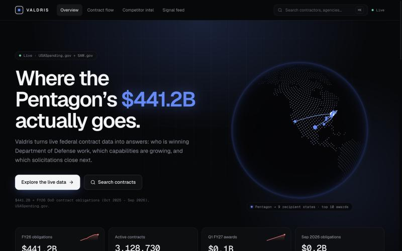

LIVEValdris: defense procurement intelligence ↗
A full-stack platform that tracks more than $400B a year in DoD contract obligations. It shows which contractors are winning, in which capability areas, and where funding is moving. A daily pipeline refreshes the data, Claude writes plain-English briefs on awards and market shifts, and a watchlist flags SAM.gov solicitations before they close.
$400B+DoD obligations tracked yearly
Dailyrefresh from USASpending and SAM.gov
0mock numbers; everything is live
- React
- Node / Express
- Supabase
- Claude API
- Vercel